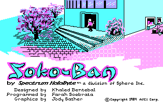
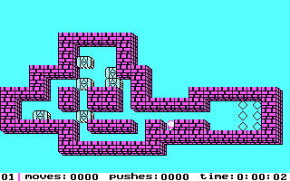

名稱：迷宮組曲 (Soko-Ban，英文版)
簡介：Thinking Rabbit 1981年出品的推箱子解謎遊戲，1987年移植至DOS，由Spectrum HoloByte
代理發行，台灣則由智冠代理進口 [待補]。


保護：磁片，破解碼：
SOKOBAN.EXE
32 DB 51 B4
90 90 -- --
8A D3 CD 13 73 08
B8 01 00 90 EB --
CD 13 73 32
90 90 EB --
CD 13 EB BB
90 90 -- --
E8 CF 04 33 ED B9 04 00 8B D4 83 C2 0F D3 EA 8C D0 03 C2 2E
8C D8 05 D0 1D 2E A3 0A 00 B8 10 00 2E A3 08 00 EB E9 1E --